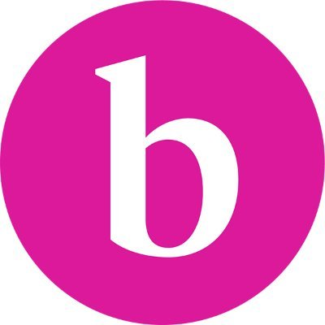
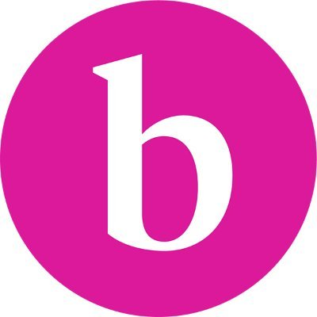

★★★★★
"Transformative Experience! The resume and interview service provided invaluable guidance in refining my professional image. Their expert advice helped me craft a compelling resume and taught me effective interview strategies. Thanks to their assistance, I landed my dream job!"
★★★★
"Game-Changer! This service elevated my job search to new heights. With their assistance, I learned how to present myself confidently and professionally. Their tailored approach helped me stand out in a competitive job market. I highly recommend their services to anyone seeking career advancement."
★★★★★
"Confidence Booster! The resume and interview service gave me the tools and confidence to showcase my skills and experience effectively. Their personalized approach addressed my specific needs and enabled me to articulate my value proposition to potential employers. Thanks to their support, I secured multiple job offers!"
★★★★★
"Professional Excellence! From resume refinement to mock interviews, this service exceeded my expectations at every step. Their attention to detail and industry expertise helped me present myself in the best possible light. With their help, I not only secured interviews but also received job offers from top companies. Highly recommended for anyone serious about advancing their career!"

 
